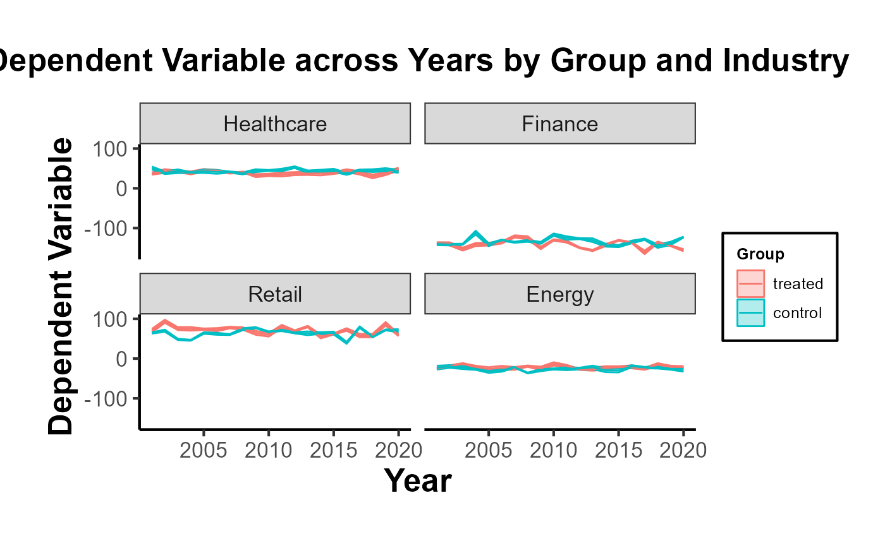

0. Model Free Evidence
Mike Nguyen
2024-01-12
1-model_free.Rmd
library(causalverse)
library(tidyverse)
#> ── Attaching core tidyverse packages ──────────────────────── tidyverse 2.0.0 ──
#> ✔ dplyr 1.1.2 ✔ readr 2.1.4
#> ✔ forcats 1.0.0 ✔ stringr 1.5.1
#> ✔ ggplot2 3.4.4 ✔ tibble 3.2.1
#> ✔ lubridate 1.9.2 ✔ tidyr 1.3.0
#> ✔ purrr 1.0.2
#> ── Conflicts ────────────────────────────────────────── tidyverse_conflicts() ──
#> ✖ dplyr::filter() masks stats::filter()
#> ✖ dplyr::lag() masks stats::lag()
#> ℹ Use the conflicted package (<http://conflicted.r-lib.org/>) to force all conflicts to become errors
knitr::opts_chunk$set(cache = TRUE)Often in research, especially in econometrics, public policy, and social sciences, we aim to understand the impact of an intervention or treatment. Typically, a group receiving the treatment (the “treated” group) is compared against a group not receiving it (the “control” group). One of the crucial steps in this analysis is visualizing the trends in both groups over time. Such visualizations, especially when they are presented across different groupings (e.g., industries), provide what is sometimes termed “model-free evidence”. This means the evidence is not reliant on the assumptions of a particular statistical model, making it a robust way to initially understand the data before diving into intricate model-based analyses.
Why Visualize Model-Free Evidence?
Immediate Visual Feedback: Before we fit complex models to our data, it’s beneficial to see the raw trends. Often, the naked eye can capture nuances that might be missed or misinterpreted by statistical models.
Simplicity for Broader Audience: Not everyone in your audience might be comfortable with intricate statistical details. Simple plots showcasing trends can be understood by a broader audience.
Highlighting Discrepancies: If there are stark differences in trends between the treated and control groups, or if these trends vary across categories like industries, they become immediately evident.
Building Trust in Subsequent Analysis: When we later present model-based results, having first shown the raw trends ensures the audience that the models aren’t capturing spurious patterns.
Using plot_trends_across_group for Model-Free
Evidence
The function plot_trends_across_groupis
designed to help researchers visualize these trends effortlessly. Users
can input their dataset, specify the x-axis, y-axis, grouping variable
(like treated/control), and a secondary grouping variable (like
industries).
Here’s an example using a fictitious dataset:
# Set random seed for reproducibility
set.seed(123)
# Create the fictitious dataset
n_years <- 20
industries <- c(
# "Tech",
"Healthcare", "Finance", "Retail", "Energy")
data <- expand.grid(industry = industries,
year = 2001:2020,
group = c("treated", "control")) %>%
group_by(industry, year, group) %>%
mutate(
dependent_variable = case_when(
# industry == "Tech" & group == "treated" ~ rnorm(1, 50 + year, 10),
# industry == "Tech" & group == "control" ~ rnorm(1, 40 + year, 10),
industry == "Healthcare" & group == "treated" ~ rnorm(1, 40, 5),
industry == "Healthcare" & group == "control" ~ rnorm(1, 45, 5),
industry == "Finance" & group == "treated" ~ rnorm(1, 60 - year/10, 10),
industry == "Finance" & group == "control" ~ rnorm(1, 65 - year/10, 10),
industry == "Retail" & group == "treated" ~ rnorm(1, 70, 10),
industry == "Retail" & group == "control" ~ rnorm(1, 65, 10),
industry == "Energy" & group == "treated" ~ rnorm(1, 80 - year/20, 5),
industry == "Energy" & group == "control" ~ rnorm(1, 75 - year/20, 5),
TRUE ~ rnorm(1, 50, 10)
),
se = runif(n(), 1, 5) # random standard errors between 1 and 5
)
# Create panel of line plots with grid layout and uncertainty
data %>%
# filter(industry != "Tech") |>
ggplot(aes(x = year, y = dependent_variable, color = group)) +
geom_ribbon(aes(ymin = dependent_variable - se,
ymax = dependent_variable + se, fill = group), alpha = 0.3) +
geom_line() +
facet_wrap(~industry, ncol = 2) +
theme_minimal() +
labs(title = "Dependent Variable across Years by Group and Industry",
x = "Year",
y = "Dependent Variable",
color = "Group",
fill = "Group") +
causalverse::ama_theme()
# Example usage
plot <- plot_trends_across_group(
data = data,
x_var = "year",
y_var = "dependent_variable",
grouping_var = "group",
facet_var = "industry",
# se = "se",
include_legend = T,
title = "My Custom Title"
)
print(plot)